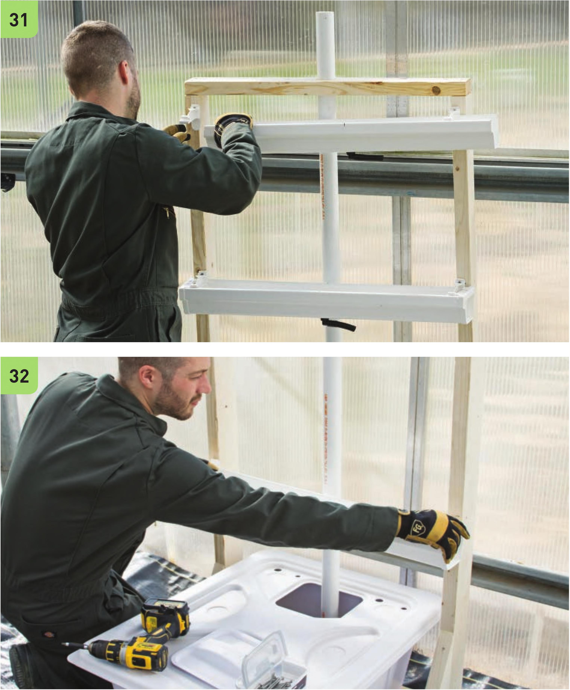

Attaching Troughs to Frame The troughs in this design are 18" apart starting 3" from the top beam. This gives 18" of space below the lowest trough for the 1 1 "-tall reservoir. 29 On each of the vertical 5' 2 x 4" segments, mark 3", 21", and 39" from the top beam. 30 Screw in the gutter hangers into the marked areas on the vertical 5' 2 x 4" segments. 31 Slide the gutters into the hangers. 32 Add the end caps. 128 DIY HYDROPONIC GARDENS
